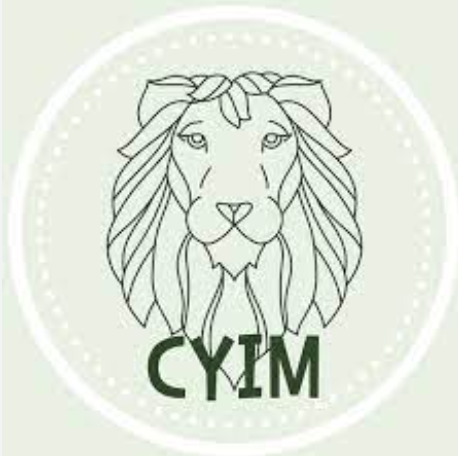
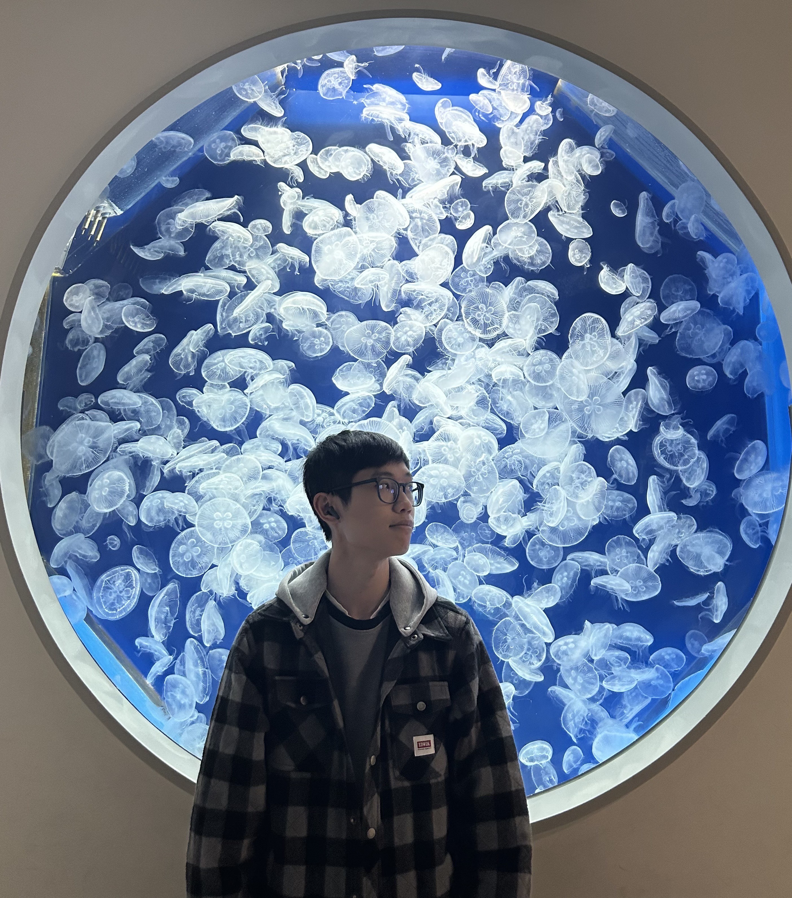

位於交通便捷的中原大學，
是由資訊管理學系二年級的學生小本經營。
穎新眼鏡致力幫助所有有視力困擾的帥哥、
水水們能夠找到適合自己的隱形眼鏡，
為此，穎新眼鏡提供豐富的選擇，
搭配不定時活動，
讓所有穎新眼鏡的會員好友們
用最優惠的價格擁守護美麗的靈魂之窗。
是由資訊管理學系二年級的學生小本經營。
穎新眼鏡致力幫助所有有視力困擾的帥哥、
水水們能夠找到適合自己的隱形眼鏡，
為此，穎新眼鏡提供豐富的選擇，
搭配不定時活動，
讓所有穎新眼鏡的會員好友們
用最優惠的價格擁守護美麗的靈魂之窗。
前端
11144121 資管二甲 周佩穎
雖然這次做期末專案做電商網站有期中個人網站的經驗加持， 但是因為是不同的類型，還是遇到了不少困難， 幸運的是在解決問題的同時學習到很多寶貴的經驗， 不論是軟實力還是硬實力，也發覺自己不足的部分， 希望未來能夠慢慢加強程式與排版加快自己寫網頁的速度！
11144133 資管二甲 彭新祐
雖然這次做期末專案做電商網站有期中個人網站的經驗加持， 但是因為是不同的類型，還是遇到了不少困難， 幸運的是在解決問題的同時學習到很多寶貴的經驗， 不論是軟實力還是硬實力，也發覺自己不足的部分， 希望未來能夠慢慢加強程式與排版加快自己寫網頁的速度！
11144122 資管二甲 林吟珊
在製作期末專題中，我們不僅需要將所學加以應用， 更是要透過額外的學習、與後端同學合作才能完成， 是一項困難的挑戰。在過程中，我也收穫了不少， 無論是技術方面，或是團隊合作部分， 都有了與以往不同的難得經驗，相信在完成專題後， 我能有所成長和進步！
後端

11144238 資管二乙 王敏權
此次期末專題，給予了我很多自我學習、 團隊合作的機會。 除了要細心設計運作邏輯外， 還要同時確保資料的安全， 學習透過網路資源、 AI協作，最後很開心能順利完成專題！

11144231 資管二乙 高嘉駿
這次的期末專題，讓我對於網頁的分工合作有了 更多的體驗，也體悟到自己在於後端團隊中適合的定位。 專案中有許多要注意的地方，除了程式本身之外， 也需要考量到每個人不同的想法與專長，學習透過溝通 技巧進行有效交流是我未來需要再精進的部分之一，很高興 有這次的專題可以讓自己找到仍然不足的問題，也希望自己能夠有所成長。
11144202 資管二乙 楊禮澤
這次的網路程式專題，是就讀資管以來第一次 有較完整的程式專題實作，也是第一次有前後端分工的合作。 相較之前較為片段化的學習及程式撰寫， 首次的專案練習剛開始非常難以適應，對於規劃上有很多的不確定， 希望經過這次經驗可以讓自己有所進步成長， 未來能夠更從容面對各種需要合作的程式專題或工作。
